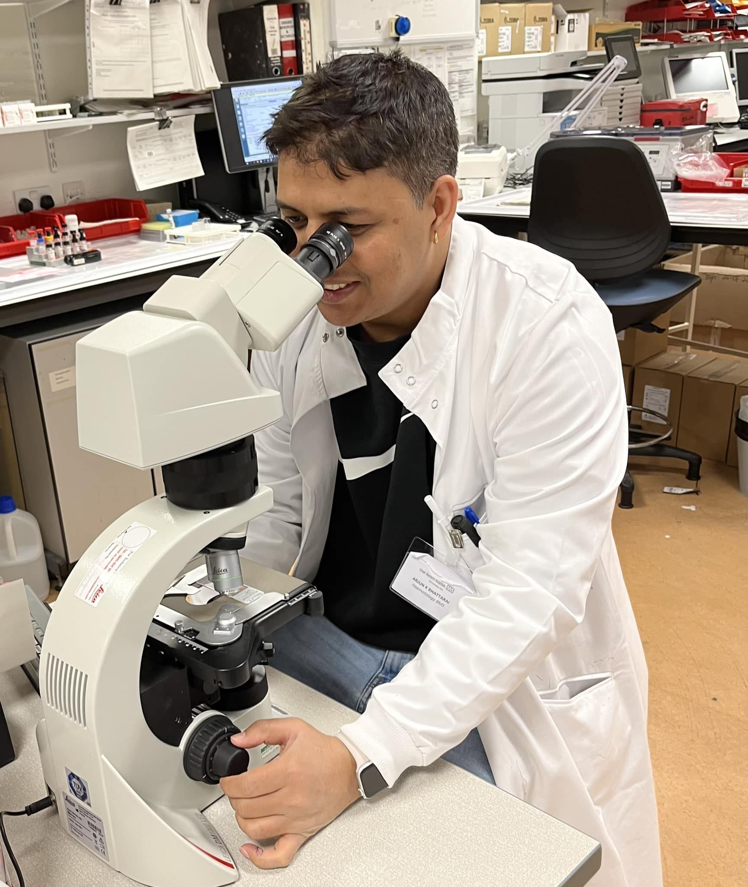

HCPC-registered Specialist Biomedical Scientist with over twelve years of experience across haematology, coagulation, blood transfusion, genomics, and laboratory medicine gained in Nepal, India, and the UK.
Specialist Training & CPD



- Malaria Parasite Morphology – London School of Hygiene & Tropical Medicine
- Thrombophilia Screening and Venous Thrombosis – Hammersmith Hospital Reference Laboratory
- Blood Film Morphology – Imperial College Healthcare NHS Trust
- Handling of Atypical FBC Results – North West London Pathology
- Blood Parasitology (Trypanosomes, Microfilaria, Babesia, Plasmodium)
- Sickle Cell Disease Update – IBMS Congress
- Genomics Event Delegate – University of Cambridge
- Various LIMS and Pathology IT training events (Sunquest, WinPath, AMS)
Continuous professional development has been a core aspect of my career. I regularly participate in specialist workshops, conferences, and laboratory-based practical courses to ensure my skills remain aligned with modern diagnostic standards and NHS best practices.